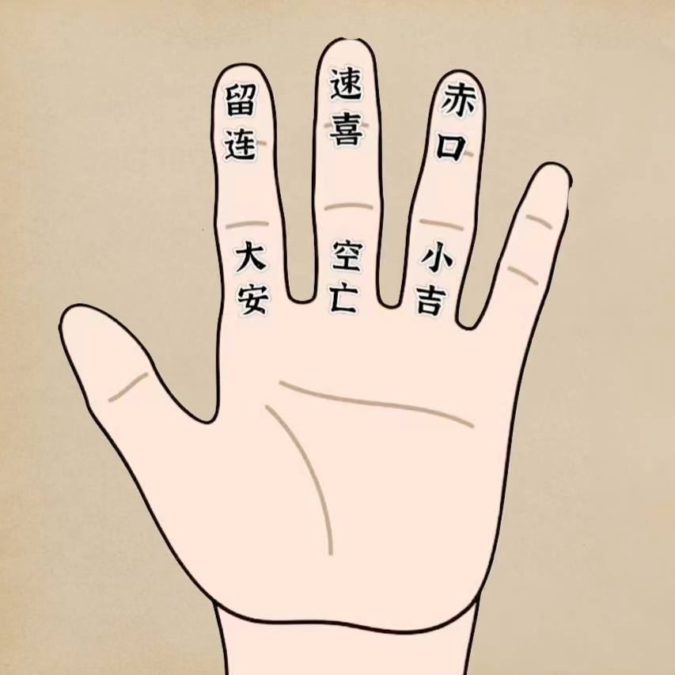
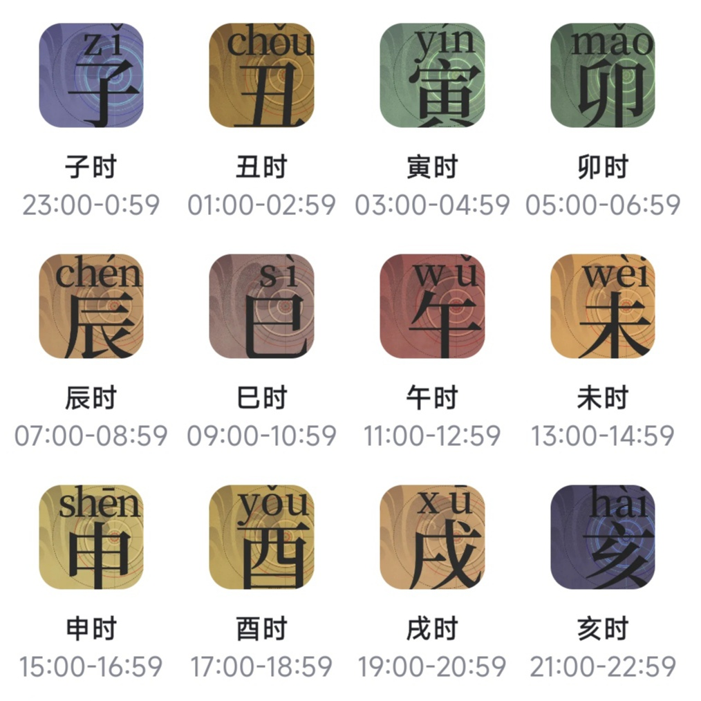

小六壬计算器
2024-04-23 08:00:00
农历：

计算结果
三吉：大安，速喜，小吉
三凶：留连，赤口，空亡
占卜算法：
从“大安”开始顺时针循环，月上起日，日上起时。
指位解释：
食指的下节叫大安，代表最大的吉利；
食指的上节叫留连，代表运气平平，凡事拖延；
中指的上节叫速喜，代表喜事就在眼前，算各种事情都是上吉的好卦；
中指的下节叫空亡，这是最凶的卦，所占事宜均很大的不利；
无名指的上节叫赤口，代表多争执有官讼，事态不和；
无名指的下节叫小吉，代表将要有好结果，所算的事情值得等待和坚持。
释义口诀：
大安事事昌，求财在坤方，失物去不远，宅舍保安康，
行人身未动，病者主无妨，将军回田野，仔细更推详；
留连事难成，求谋日未明，官事凡宜缓，去者未回程，
失物南方见，急讨方心称，更须防口舌，人口且平平；
速喜喜来临，求财向南行，失物申未午，逢人路上寻，
官事有福德，病者无祸侵，田宅六畜吉，行人有信音；
赤口主口舌，官非切宜防，失物速速讨，行人有惊慌，
六畜多作怪，病者出西方，更须防咀咒，诚恐染瘟皇；
小吉最吉昌，路上好商量，阴人来报喜，失物在坤方，
行人即便至，交关甚是强，凡事皆和合，病者叩穷苍；
空亡事不祥，阴人多乖张，求财无利益，行人有灾殃，
失物寻一见，官事有刑伤，病人逢暗鬼，解禳保安康。
传统占语:
1、大安：身不动时，五行属木，颜色青色，方位东方，临青龙，凡谋事主一、五、七。有静止、心安、吉祥之含义。
2、留连：卒未归时，五行属水，颜色黑色，方位北方，临玄武，凡谋事主二、八、十。有暗昧不明、延迟、纠缠、拖延、漫长之含义。
3、速喜：人即至时，五行属火，颜色红色，方位南方，临朱雀，凡谋事主三、六、九。有快速、喜庆、吉利之含义。指时机已到。
4、赤口：官事凶时，五行属金，颜色白色，方位西方，临白虎，凡谋事主四、七、十。有不吉、惊恐、凶险、口舌是非之含义。
5、小吉：人来喜时，五行属水，临六合，凡谋事主一、五、七。有和合、吉利之含义。
6、空亡：音信稀时，五行属土，颜色黄色，方位中央，临勾陈，凡谋事主三、六、九。有不吉、无结果、忧虑之含义。
占卜原则：
1. 在需要时立刻起卦，无需占卜时不要进行，且每个事件只能占卜一次，重复占卜无效。
2. 对同一事件的占卜也可根据临时情况即时起卦，例如在上次事件基础上，可根据接到朋友邀约的具体时间重新起卦。但对于单一事件，仅能进行一次占卜，例如一旦根据接约时间进行了占卜，就不再依据约会时间进行。
3.认识到占卜并非百分之百准确，只要大致方向正确即可视为准确。通常，生活中的重大事件预测准确率可达80%。例如，如果被盗后能够预测到是否能找到罪犯、涉及人数、方向和破案时间，即使未能准确预测追回的金额，也仍可认为是成功的。
4. 占卜过程中应保持敬畏之心，不可轻视六壬等占卜术，否则可能带来不良后果。
